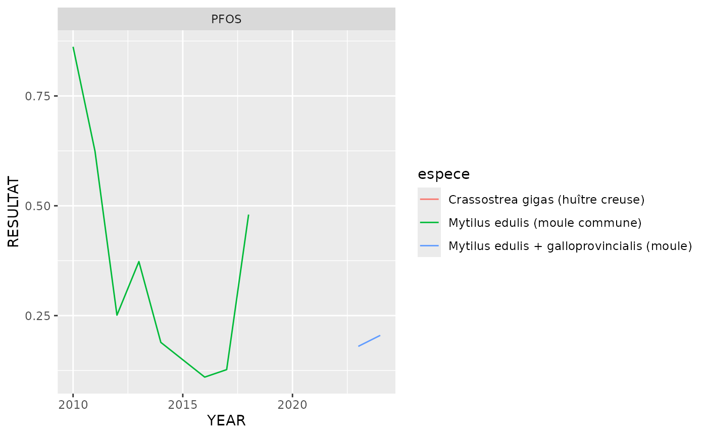
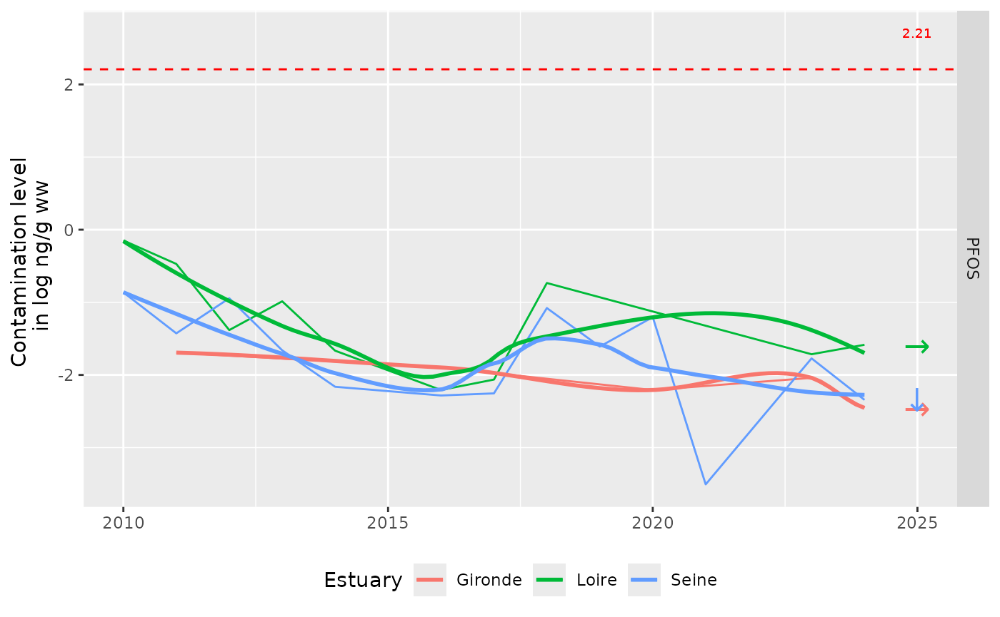
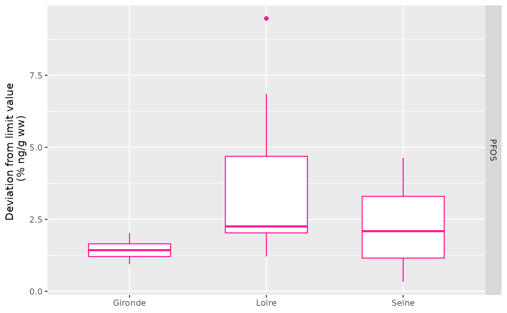

PFOS <- data.frame(PARAMETRE_LIBELLE = "PFOS",
EQS_EC_ng_gww = 9.1)
data_PFOS <- esteem.overview::data_ROCCHMV_cleaned |> ungroup() |>
filter(support == "Bivalve") |>
select(-c(SUPPORT_NIVEAU_PRELEVEMENT, support, niveau)) |>
filter(PARAMETRE_LIBELLE %in% PFOS$PARAMETRE_LIBELLE) |>
left_join(esteem.overview::data_ROCCHMV_bio, by = "ESTUARY")Different units:
data_PFOS |>
distinct(UNITE)## # A tibble: 3 × 1
## UNITE
## <chr>
## 1 ng.g-1
## 2 µg.kg-1, p.h.
## 3 ng.kg-1, p.h.
# data_PFOS |>
# mutate(YEAR = as.factor(YEAR)) |>
# distinct(YEAR, UNITE, ESTUARY, PARAMETRE_LIBELLE) |> View(title = "PFOS units")Transform all results in ng/g ww (same as µg/kg):
data_PFOS_ww <- data_PFOS |>
# transformation into ww concentrations
mutate(RESULTAT = case_when(
UNITE == "µg.kg-1, p.h." ~ RESULTAT,
UNITE == "ng.kg-1, p.h." ~ RESULTAT / 1000,
UNITE == "ng.g-1" ~ RESULTAT * (`Matière sèche_%` / 100),
)) |>
# Change to unified unit
mutate(UNITE = "ng/g ww") |>
# Get only one value per year
group_by(ESTUARY, YEAR, PARAMETRE_LIBELLE) |>
mutate(RESULTAT = mean(RESULTAT)) |>
ungroup() |>
# Round result values
mutate(RESULTAT = round(RESULTAT, digits = 3))## `summarise()` has grouped output by 'ESTUARY'. You can override using the
## `.groups` argument.## # A tibble: 3 × 3
## # Groups: ESTUARY [3]
## ESTUARY PARAMETRE_LIBELLE mean
## <chr> <chr> <dbl>
## 1 Gironde PFOS 0.132
## 2 Loire PFOS 0.328
## 3 Seine PFOS 0.208
data_PFOS_ww |>
distinct(ESTUARY, espece)## # A tibble: 5 × 2
## ESTUARY espece
## <chr> <chr>
## 1 Gironde Crassostrea gigas (huître creuse)
## 2 Loire Mytilus edulis (moule commune)
## 3 Loire Mytilus edulis + galloprovincialis (moule)
## 4 Loire Crassostrea gigas (huître creuse)
## 5 Seine Mytilus edulis (moule commune)## # A tibble: 11 × 3
## ESTUARY YEAR espece
## <chr> <dbl> <chr>
## 1 Loire 2010 Mytilus edulis (moule commune)
## 2 Loire 2011 Mytilus edulis (moule commune)
## 3 Loire 2012 Mytilus edulis (moule commune)
## 4 Loire 2013 Mytilus edulis (moule commune)
## 5 Loire 2014 Mytilus edulis (moule commune)
## 6 Loire 2016 Mytilus edulis (moule commune)
## 7 Loire 2017 Mytilus edulis (moule commune)
## 8 Loire 2018 Mytilus edulis (moule commune)
## 9 Loire 2023 Mytilus edulis + galloprovincialis (moule)
## 10 Loire 2024 Crassostrea gigas (huître creuse)
## 11 Loire 2024 Mytilus edulis + galloprovincialis (moule)
data_PFOS_ww |>
filter(ESTUARY == "Loire") |>
ggplot() +
aes(x = YEAR, y = RESULTAT, colour = espece) +
geom_line() +
facet_wrap(vars(PARAMETRE_LIBELLE), scales = "free_y")
Simplify with two species groups
data_PFOS_ww |>
group_by(ESTUARY, PARAMETRE_LIBELLE) |>
summarise(min_year = min(YEAR),
max_year = max(YEAR))## `summarise()` has grouped output by 'ESTUARY'. You can override using the
## `.groups` argument.## # A tibble: 3 × 4
## # Groups: ESTUARY [3]
## ESTUARY PARAMETRE_LIBELLE min_year max_year
## <chr> <chr> <dbl> <dbl>
## 1 Gironde PFOS 2011 2024
## 2 Loire PFOS 2010 2024
## 3 Seine PFOS 2010 2024
# Compute for all time serie
data_PFOS_ww <- data_PFOS_ww |>
mutate(last_trend = "Last 15 years")
res_PFOS_ww_trends <- get_last_trend_info(data = data_PFOS_ww, norm = PFOS)## Warning: There was 1 warning in `summarise()`.
## ℹ In argument: `res = list(spearman_test(x = YEAR, y = RESULTAT))`.
## ℹ In group 2: `ESTUARY = "Loire"` `PARAMETRE_LIBELLE = "PFOS"`.
## Caused by warning in `cor.test.default()`:
## ! Cannot compute exact p-value with ties## Joining with `by = join_by(PARAMETRE_LIBELLE)`
writexl::write_xlsx(res_PFOS_ww_trends, "../inst/results/data_contam/PFOS/recent_trends_PFOS_ww.xlsx")
ggplot_PFOS_ww <- ggplot(data_PFOS_ww) +
aes(x = YEAR,
y = log(RESULTAT),
colour = ESTUARY) +
geom_line() +
geom_smooth(se = FALSE) +
theme(legend.position = "bottom") +
facet_grid(rows = vars(
fct_relevel(PARAMETRE_LIBELLE, PFOS$PARAMETRE_LIBELLE)
), scales = "free_y") +
labs(colour = "Estuary", y = "Contamination level \n in log ng/g ww", x = NULL) +
# Add arrows for significant last trends
geom_text(
data = res_PFOS_ww_trends,
aes(x = max(last_year)+1, y = log(last_resultat), label = symbol), size = rel(6),
family = "DejaVu Sans", # specify the font that contains arrows
show.legend = FALSE) +
# Add environmental threshold when existing
geom_text(
data = res_PFOS_ww_trends,
aes(x = max(last_year)+1, y = log(EQS_EC_ng_gww) +0.5, label = sprintf("%.2f", log(EQS_EC_ng_gww))),
color = "red", size = 2.5
) +
geom_hline(
data = res_PFOS_ww_trends,
aes(yintercept = log(EQS_EC_ng_gww)),
color = "red", linetype = "dashed"
)
ggplot_PFOS_ww## `geom_smooth()` using method = 'loess' and formula = 'y ~ x'## Warning in simpleLoess(y, x, w, span, degree = degree, parametric = parametric,
## : span too small. fewer data values than degrees of freedom.## Warning in simpleLoess(y, x, w, span, degree = degree, parametric = parametric,
## : pseudoinverse used at 2010.9## Warning in simpleLoess(y, x, w, span, degree = degree, parametric = parametric,
## : neighborhood radius 9.065## Warning in simpleLoess(y, x, w, span, degree = degree, parametric = parametric,
## : reciprocal condition number 0## Warning in simpleLoess(y, x, w, span, degree = degree, parametric = parametric,
## : There are other near singularities as well. 16.524## Warning in simpleLoess(y, x, w, span, degree = degree, parametric = parametric,
## : Chernobyl! trL>n 5
## Warning in simpleLoess(y, x, w, span, degree = degree, parametric = parametric,
## : Chernobyl! trL>n 5## Warning in sqrt(sum.squares/one.delta): NaNs produced
ggsave(plot = ggplot_PFOS_ww, "../inst/results/data_contam/PFOS/ggplot_PFOS_ww_time_series.jpg",
width = 10, height = 7, units = "cm")## `geom_smooth()` using method = 'loess' and formula = 'y ~ x'## Warning in simpleLoess(y, x, w, span, degree = degree, parametric = parametric,
## : span too small. fewer data values than degrees of freedom.## Warning in simpleLoess(y, x, w, span, degree = degree, parametric = parametric,
## : pseudoinverse used at 2010.9## Warning in simpleLoess(y, x, w, span, degree = degree, parametric = parametric,
## : neighborhood radius 9.065## Warning in simpleLoess(y, x, w, span, degree = degree, parametric = parametric,
## : reciprocal condition number 0## Warning in simpleLoess(y, x, w, span, degree = degree, parametric = parametric,
## : There are other near singularities as well. 16.524## Warning in simpleLoess(y, x, w, span, degree = degree, parametric = parametric,
## : Chernobyl! trL>n 5
## Warning in simpleLoess(y, x, w, span, degree = degree, parametric = parametric,
## : Chernobyl! trL>n 5## Warning in sqrt(sum.squares/one.delta): NaNs produced
data_PFOS_ww_norm_relative <- data_PFOS_ww |>
left_join(PFOS) |>
mutate(RESULTAT = RESULTAT / EQS_EC_ng_gww * 100)## Joining with `by = join_by(PARAMETRE_LIBELLE)`
plot_PFOS_ww_periode <- data_PFOS_ww_norm_relative |>
ggplot() +
aes(x = ESTUARY, y = RESULTAT) +
geom_boxplot(width = 0.6, colour = "deeppink") +
facet_grid(rows = vars(PARAMETRE_LIBELLE), scales = "free_y") +
labs(x = NULL, y = "Deviation from limit value \n (% ng/g ww)", colour = "Period") +
theme(legend.position = "bottom")
plot_PFOS_ww_periode
ggsave(plot = plot_PFOS_ww_periode, "../inst/results/data_contam/PFOS/ggplot_PFOS_ww_periods.jpg",
width = 10, height = 7, units = "cm")
data_PFOS_ww_levels <- data_PFOS_ww |>
group_by(ESTUARY, PARAMETRE_LIBELLE) |>
summarise(median_ng_gww = median(RESULTAT), .groups = "drop") |>
arrange(PARAMETRE_LIBELLE)
data_PFOS_ww_normrelative <- data_PFOS_ww_norm_relative |>
group_by(ESTUARY, PARAMETRE_LIBELLE) |>
summarise(median_percent = median(RESULTAT), .groups = "drop") |>
arrange(PARAMETRE_LIBELLE) |>
select(ESTUARY, PARAMETRE_LIBELLE, median_percent)
data_PFOS_general_levels <- full_join(data_PFOS_ww_levels, data_PFOS_ww_normrelative)## Joining with `by = join_by(ESTUARY, PARAMETRE_LIBELLE)`
writexl::write_xlsx(x = data_PFOS_general_levels, path = "../inst/results/data_contam/PFOS/summarised_levels_data_PFOS_ww.xlsx")
# trends
res_PFOS_ww_trends## # A tibble: 3 × 8
## ESTUARY PARAMETRE_LIBELLE rho p.value symbol last_year last_resultat
## <chr> <chr> <dbl> <dbl> <chr> <dbl> <dbl>
## 1 Gironde PFOS -0.9 0.0833 → 2024 0.086
## 2 Loire PFOS -0.525 0.0972 → 2024 0.205
## 3 Seine PFOS -0.560 0.0499 ↓ 2024 0.096
## # ℹ 1 more variable: EQS_EC_ng_gww <dbl>
# color dot from percentage
# blue: [0-50%[, green: [50-100%[, yellow:[100-150%[, orange: [150-300%[, red: [300-500%[, black: > 500%
data_PFOS_ww_norm_relative |>
group_by(ESTUARY, PARAMETRE_LIBELLE) |>
summarise(median = median(RESULTAT))## `summarise()` has grouped output by 'ESTUARY'. You can override using the
## `.groups` argument.## # A tibble: 3 × 3
## # Groups: ESTUARY [3]
## ESTUARY PARAMETRE_LIBELLE median
## <chr> <chr> <dbl>
## 1 Gironde PFOS 1.43
## 2 Loire PFOS 2.25
## 3 Seine PFOS 2.09